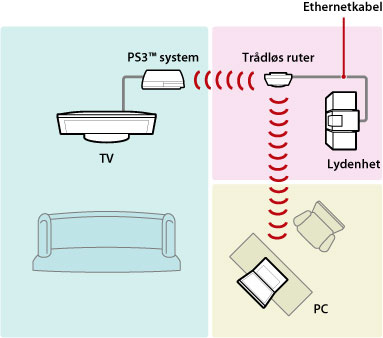
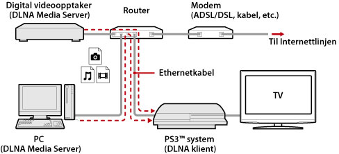
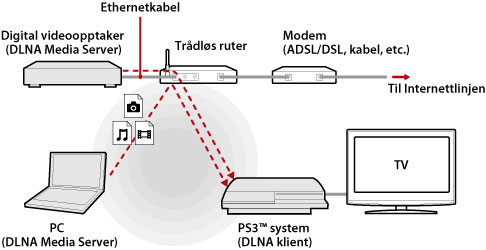
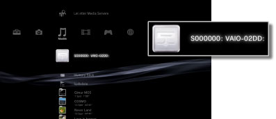
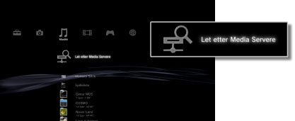

Innstillinger > Nettverksinnstilling > Media Server kontakt
Media Server kontakt
Justere innstillingene for tilkopling til utstyr som støtter DLNA.
| Aktiver | Tillater tilkopling til utstyr som støtter DLNA. |
|---|---|
| Deaktiver | Deaktiverer tilkopling til utstyr som støtter DLNA. |
Om DLNA
DLNA (Digital Living Network Alliance) er en standard som tillater å kople til digitalt utstyr som datamaskiner, digitale videoopptakere og TV-er til et nettverk og for å dele data som er på det andre tilkoblede DLNA-kompatible utstyret.
DLNA-kombatibelt utstyr tjener to forskjellige funksjoner. "Servere" distribuerer media som bilde, musikk eller videofiler, og "klient"-mottak og spille mediene. Enkelte utstyr utfører begge funksjonene. Med å bruke PS3™-systemet som en klient, kan du vise bilder eller spille musikk eller videofiler som er lagret på en enhet med DLNA Media Server funksjonalitet over et nettverk.

Kople til PS3™ systemet og DLNA Media Server
Kople til PS3™ systemet og DLNA Media Server med en kablet eller trådløs tilkopling.
Eksempel når du kopler til en datamaskin med en kablet tilkopling.

Eksempel når du kopler til en datamaskin med en trådløs tilkopling.

Sette opp en DLNA Media Server
Sett opp DLNA Media Server slik at den kan brukes av PS3™ systemet. Følgende utstyr kan brukes som en DLNA Media Server.
- Utstyr som støtter DLNA-standarden, inkludert produkter fra andre selskaper enn Sony
- Datamaskiner (PC-er) med Windows Media Player 11 installert
Når du bruker et AV utstyr som en DLNA Media Server
Aktiver DLNA Media Server funksjonen på det tilkoplede utstyret for å gjøre innholdet tilgjengelig for den delte tilgangen. Oppsettsmetoden varierer avhengig av det tilkoplede utstyret. Se instruksjonene for den tilkoplede enheten om detaljer.
Når du bruker en Microsoft Windows datamaskin som en DLNA Media Server
En Microsoft Windows datamaskin kan brukes som en DLNA Media Server ved å bruke Windows Media Player 11 funksjoner.
1. |
Start Windows Media Player 11. |
|---|---|
2. |
Velg [Media Sharing] fra [Library] menyen. |
3. |
Kontroller [Share media]. |
4. |
Fra listen over utstyr under avkrysningsboksen [Share media], velg det utstyret som du ønsker å dele data med, og velg deretter [Tillate]. |
5. |
Velg [OK]. |
Tips
- Windows Media Player 11 er ikke installert som standard på en Microsoft Windows datamaskin. Last ned installasjonsprogrammet fra Microsoft nettsted for å installere Windows Media Player 11.
- For detaljer om hvordan du skal bruke Windows Media Player 11, henvis til Windows Media Player 11 hjelpefunksjon.
- I enkelte tilfeller, kan originale DLNS Media Server programmer installeres på datamaskinen. Se instruksjonene for den tilkoplede datamaskinen om detaljer.
Spille av DLNA Media Server innhold
Når du slår på PS3™ systemet, blir DLNA Media Servers på samme nettverket automatisk oppdaget og ikonene for de oppdagede serverne vises under  (Foto),
(Foto),  (Musikk), og
(Musikk), og  (Video).
(Video).
1. |
Velg ikonet for DLNA-mediaserveren du vil koble til under  |
|---|---|
2. |
Velg den filen som du ønsker å spille. |
Tips
- PS3™-systemet må koples til et nettverk. For detaljer om nettverksinnstillingene, se
 (Innstillinger) >
(Innstillinger) >  (Nettverksinnstillinger) > [Innstilling for Internettforbindelse] i denne veiledningen.
(Nettverksinnstillinger) > [Innstilling for Internettforbindelse] i denne veiledningen. - Når metoden for tildeling av IP-adresse er endret fra AutoIP til DHCP under innstillingene for nettverksmiljøet, utfør andre søk etter servere under
 (Let etter Media Servere).
(Let etter Media Servere). - Ikonet DLNA Media Server vises kun når [Media Server kontakt] er aktivert i (Innstillinger) > (Nettverksinnstillinger).
- Mappenavnet som vises varierer avhengig av DLNA Media Server.
- Avhengig av DLNA Media Server, kan det være at noen filer ikke kan spilles eller at noen handlinger kan være begrenset under avspilling.
- Du kan ikke spille opphavsrettslig beskyttet innhold.
- Filnavn for data som er lagret på servere som ikke er i samsvar med DLNA kan ha en stjerne tilføyd filnavnet. I enkelte tilfaller kan ikke disse filene spilles på PS3™ systemet. Selv om disse filene kan spilles på PS3™ systemet, er det ikke sikkert at det er mulig å spille av disse filene på annet utstyr.
- Det kan kreves at du kobler systemet (CECH-4200-serien eller senere) til med en HDMI-kabel for å spille av videoinnhold.
Søke etter DLNA Media Servers manuelt
Du kan innlede et søk etter DLNA Media Servers på det samme nettverket. Bruk denne funksjonen hvis ingen DLNA Media Server blir oppdaget når PS3™ systemet er slått på.
Velg (Let etter Media Servere) under (Foto), (Musikk) eller (Video). Når søkeresultatene vises og du går tilbake til XMB™-menyen vises en liste over DLNA-mediaservere som kan tilkobles.

Tips
(Let etter Media Servere) vises kun når [Media Server kontakt] er aktivert i (Nettverksinnstillinger) under (Innstillinger).